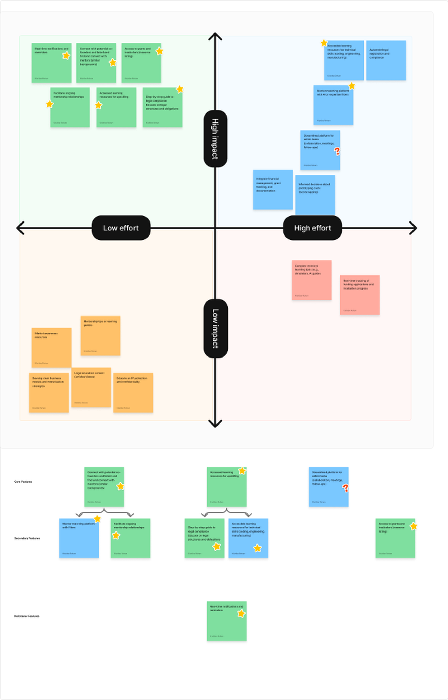
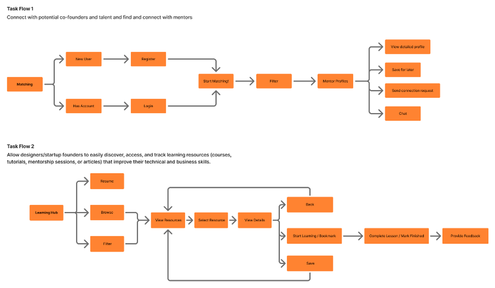
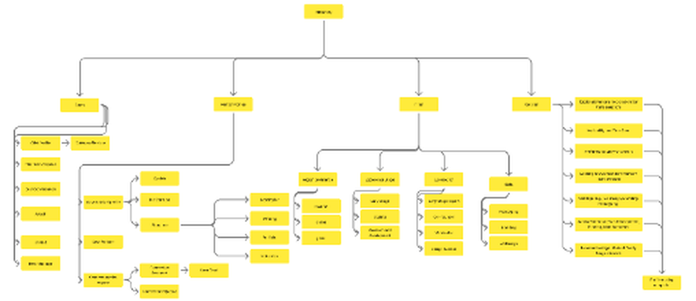
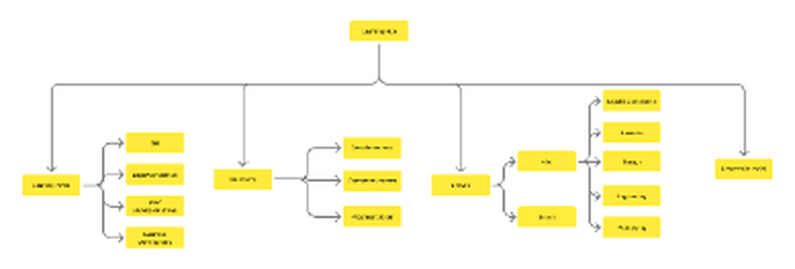
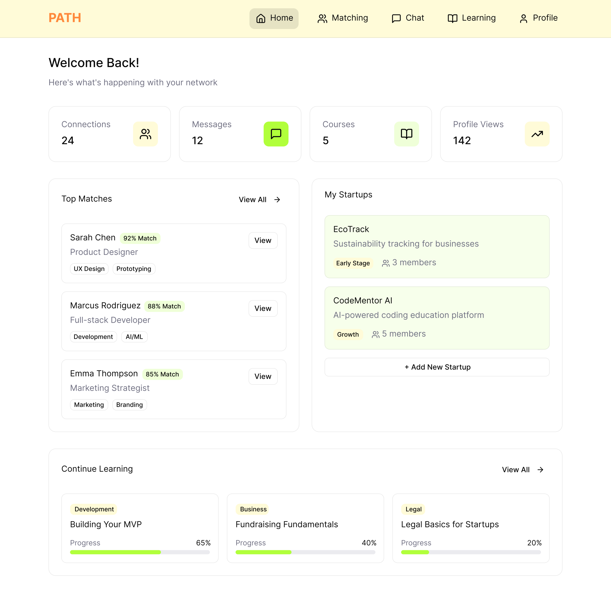
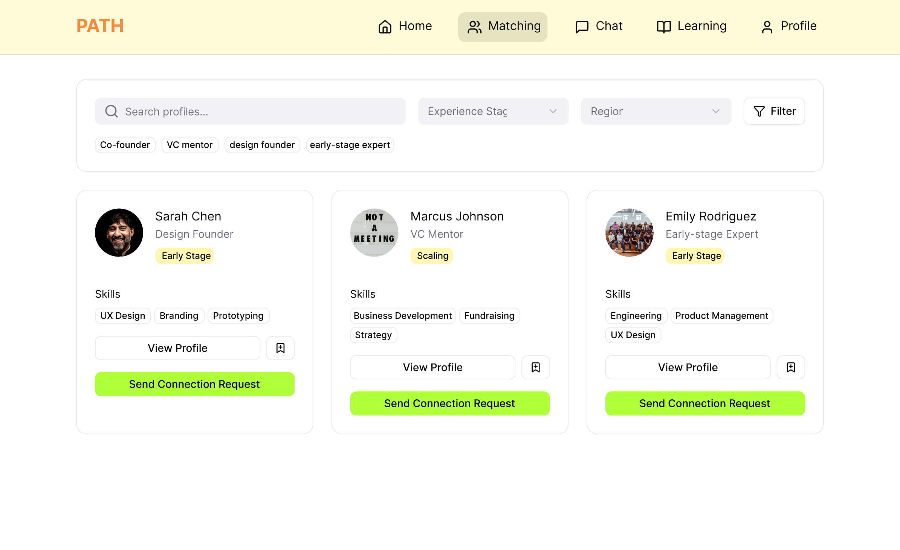
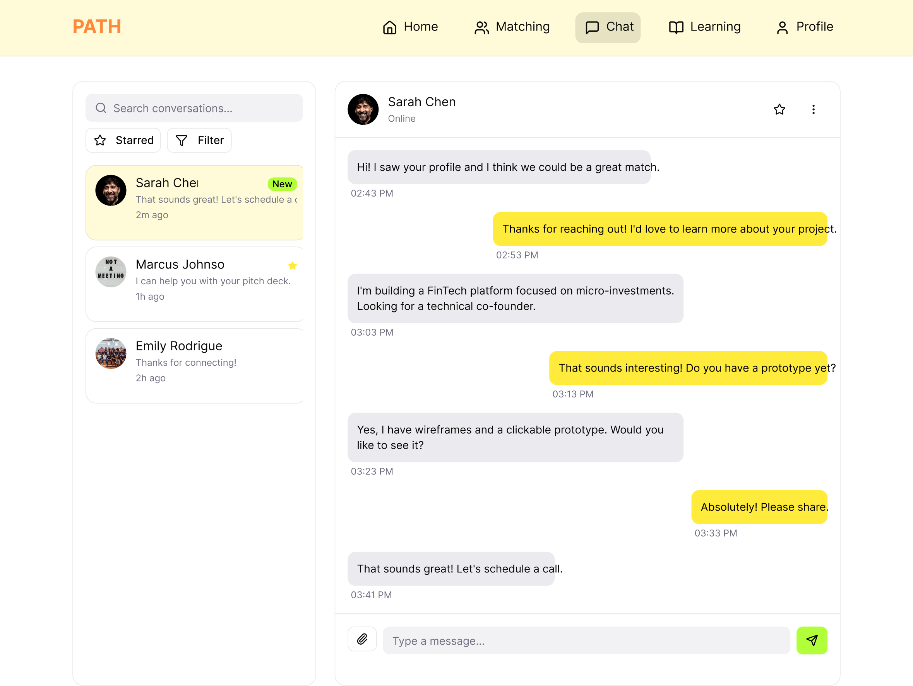
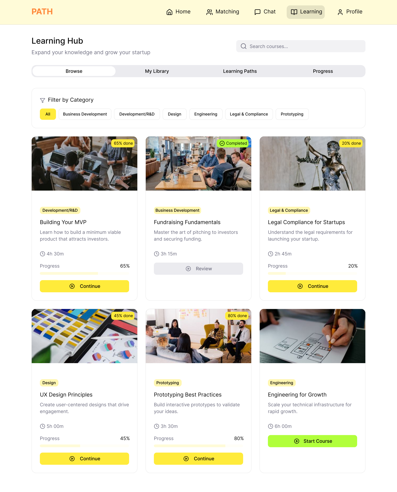
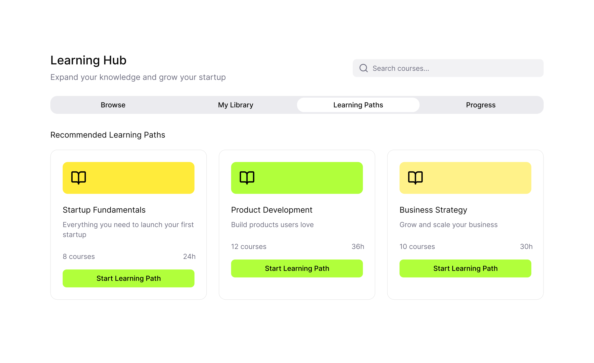

Problem Statement & Context
The Challenge:
Designers entering entrepreneurship struggle to develop business plans and manage multiple non-design tasks, making it difficult to turn creative ideas into sustainable startups as early co-founders.
group Target Audience
Design students and recent graduates in India building product-based startups, who often struggle with the non-design side of starting a business (legal compliance, funding, business development, and team building).
Why This Matters
India is the world's 3rd largest startup ecosystem, with over 140,800+ registered ventures.
India produces 15,000–20,000 design graduates per year — a large, underutilized entrepreneurial talent pool.
55% of National Startup Award subsector winners come from smaller, non-metro locations — signaling opportunity beyond traditional metro hubs.
PATH explores where designers stand in this ecosystem, and how a dedicated service could support their journey into founding.
Ecosystem Research & Discovery
Research Methodology:
Secondary research across the Indian design-startup ecosystem, legal compliance frameworks, funding landscape, and competitive platforms — paired with in-depth interviews with 7 early-stage design founders, and a quantitative survey of design students and recent graduates.
Founder Segments (by Stage)
3 RECURRING PROFILES| Stage | Goals | Tools Used | Core Desire |
|---|---|---|---|
| IDEA / COMPLIANCE Has an idea, establishing company | Get legally set up correctly | Notion, Slack, Discord, Google Docs, Excel | Single integrated tool for comms, task management, & calendar; networking with experts |
| MVP / VALIDATION Building & validating product-market fit | Move from prototype to tested product | Design labs, wood/metal workshops, Figma | Confidence in financial management & biz dev; compelling pitch for grants; cost-effective MVP |
| FUNDING / SCALING Pitching, funding, mass manufacturing | Increase sales & profit, land clients, scale | Startup India Portal, IndiaFilings, Zolvit, Excel | Clear, transparent guidance through startup filing and legal compliance |
Survey Findings & Data Points
Studying Design / Related
Entrepreneurship Interest
Working on Venture Idea
Venture Completion Rate
warning Top Challenges
- Funding & financing (extremely challenging)
- Finding mentors (gap at every skill level)
- Marketing & sales (bigger hurdle than dev)
- Legal/IP issues (limited legal awareness)
- Team building & co-founder matching
favorite Core Motivations
- Passion for design & innovation
- Creative freedom & ownership
- Personal growth & autonomy
- Financial upside & wealth creation
- Social & environmental impact
help Support Wanted
- Direct 1-on-1 mentorship matching
- Practical business & legal training
- Access to design labs & fab facilities
- Grant tracking & funding guidance
Competitive Landscape & Teardown
| Platform | Focus | Gap Identified | What It Does Well |
|---|---|---|---|
| Vakil Search | Online legal & compliance | Delays, hidden costs, inconsistent service | Streamlined registration, IP filing, GST; affordable |
| Canva | Design for marketing & branding | Limited to marketing/design functions only | Intuitive drag-and-drop, deep template library, strong free tier |
| Slack | Team connectivity & workflow | Learning curve for non-technical users | Centralized comms, real-time collaboration, strong integrations |
Market Gap Identified
Nothing in the market serves the specific, non-technical, non-legal-background designer trying to run all sides of a startup at once. Existing tools assume prior business literacy or software engineering context.
Affinity Mapping & How Might We (HMW)
Interview and survey pain points were affinity-mapped into five core clusters, each generating a set of actionable How Might We questions:
Mentorship & Team-Building
- How might we help designers connect with potential co-founders and talent across technical/business backgrounds?
- How might we help designers find mentors who match specific startup challenges, and sustain the relationship beyond a one-off session?
- How might we encourage cross-disciplinary team building?
Skills & Expertise Gap
- How might we bridge technical skill gaps (coding, engineering, manufacturing) with accessible learning?
- How might we help designers build business-development confidence, market understanding, and monetization models?
- How might we let designers validate ideas and market fit without needing that expertise themselves?
Legal & Compliance Challenges
- How might we turn legal registration and compliance into a step-by-step, centralized, plain-language process?
- How might we help designers understand the long-term tradeoffs of different legal structures?
- How might we automate parts of registration/compliance to save time?
Financial Constraints & Idea Security
- How might we help bootstrapping designers make informed costing decisions while prototyping?
- How might we create a trusted, secure way to share ideas during R&D and pitching?
- How might we help designers find the right grants/incubators for their stage and domain, and protect IP?
Startup Operations & Tool Management
- How might we bring financial tracking, grant tracking, and documentation into one unified interface?
- How might we handle real-time reminders for admin deadlines, tax filings, and follow-ups?
- How might we simplify communication and task delegation across a small early-stage team?
Impact vs. Effort Matrix
Feature concepts were evaluated on an Impact vs. Effort matrix and categorized into Core, Secondary, and No-Brainer quick wins.
Mentor & Co-Founder Matching
Connect designers with vetted mentors and cross-functional talent across technical and business domains.
Curated Learning Hub
Accessible upskilling modules spanning technical execution, business strategy, and legal compliance.
Streamlined Admin Tool
High-impact, but intentionally scoped out for future phase due to unresolved effort & scope limits.

The Solution — Core Ecosystem & User Flows
To resolve the acute barriers uncovered during founder research, PATH establishes two foundational pillars: an intelligent, criteria-driven mentorship and peer matchmaking flow, and a structured, jargon-free learning hub that guides designers step-by-step through business and technical execution.
Matching — Mentors & Co-Founders
Connect with potential co-founders and talent, and find and connect with mentors matching specific domain needs.
Eliminates cold-discovery fatigue by categorizing matches by venture stage, tech stack, and location.
Verified startup credentials, domain expertise tags, and mentor capacity badges build immediate trust.
Structured connection requests paired with in-app direct messaging and 1-click mentor call scheduling.
Learning Hub — Upskilling & Guidance
Discover, access, and track learning resources — courses, tutorials, mentorship sessions, articles — that build technical and business skills.
Demystifies complex startup filings, IP patent protections, and financial statements into accessible terms.
Sequential learning roadmaps guide founders through validation, prototyping, and pitch decks without overwhelm.
Bite-sized modules with progress tracking and personal bookmarking sync directly with the founder dashboard.

FIG 02: End-to-end task architecture mapping user journeys across registration, mentor matching, in-app messaging, and modular course progression.
Information Architecture & Visual System
Information Architecture Taxonomy
hub Matching Module Taxonomy
- Chats: Profile quick view, filter/star conversations, attachments, mark unread.
- Mentor Profiles: Socials, startup info, about, save for later, connection request.
- Global Filters: Region (local/online/global), stage (early/scaling), skill tags.
- Registration: Traits, availability, preferred industry, skill tags, stage.

menu_book Learning Hub Taxonomy
- Learning Paths: Idea validation, legal compliance, MVP dev/R&D, business dev.
- My Library: Saved resources, completed courses, progress tracker.
- Browse & Filter: Domain, duration, format, skill level.
- Legal & Compliance: Business setup, design IP, engineering, prototyping.

Color System & Gradients
PATH BRAND PALETTEPrimary Typeface: Inter
Aa Bb Cc Dd Ee Ff Gg Hh Ii Jj Kk Ll Mm Nn Oo Pp Qq Rr Ss Tt Uu Vv Ww Xx Yy Zz
0123456789 (!@#$%^&*+=)
Final UI Showcase
Presenting the complete, high-fidelity interfaces designed for PATH — unifying founder networking, mentor matching, in-app collaboration, and modular learning into a polished digital ecosystem.
Founder Dashboard & Venture Tracker
Unifying founder networking, cohort matches, venture progress, and modular learning trackers into a single high-clarity dashboard.

Eliminates fragmented tools by consolidating founder tasks and learning modules.
Live match percentages connect founders with complementary co-founder skill sets.
Automated notifications prevent missed legal filings and grant deadlines.
Domain-Specific Mentor & Co-Founder Matching Engine
Designers can filter potential co-founders and mentors by stage, technical domains (coding, manufacturing, legal), and location.

Filter candidates by geographical region, venture stage, and skill requirements.
Verified experience badges build immediate trust between mentors and founders.
Send structured connection notes specifying mutual venture goals.
Direct Founder Collaboration & In-App Workspace Messaging
Seamless in-app messaging enabling rapid communication, prototype feedback, and one-click call scheduling between matched founders and advisors.

Chat threads maintain context alongside active startup milestones and goals.
Share design links, pitch decks, and technical specs safely with advisors.
Schedule 1-on-1 mentorship sessions without leaving the chat thread.
Curated Learning Hub: Demystifying Business & Legal Execution
Accessible upskilling directory broken down into non-intimidating, modular topics spanning legal incorporation, IP protection, prototyping, and financial modeling.

Explains complex startup filings and IP rights without dense legalese.
Find exactly what you need for your current startup stage.
Save modules to your personal library for quick reference during execution.
Structured Venture Roadmaps & Learning Paths
Guided step-by-step paths taking founders sequentially from raw idea validation to pitch decks, legal incorporation, and grant applications.

Prevents feeling overwhelmed by breaking complex venture milestones into small tasks.
Interactive progress tracking gives founders clear momentum visibility.
Full vector components, auto-layouts, and flows accessible in Figma.
Status & Project Proof Points
Project Status & Deliverables:
Delivered as a comprehensive high-fidelity design system and thesis prototype — encompassing complete end-to-end UI flows for Dashboard, Matching, In-App Chat, and the Learning Hub with full IA taxonomy and brand system specs.
Process & Design Proof Points:
- 5 high-fidelity core production screens covering Dashboard, Matching, Direct Chat, Learning Hub, and Learning Paths.
- 7 in-depth qualitative founder interviews across 3 distinct startup stages.
- Detailed 3-platform competitive teardown (Vakil Search, Canva, Slack).
- Full impact/effort-based feature prioritization matrix.
- Two fully mapped task flows and comprehensive Information Architecture.